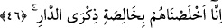
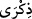
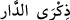
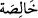
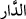
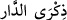

Çünkü bu ilim ve ma’rifetlerin elde edilebilmesinde en temel şeyler, “bakma” (nazar)
ve “görme” (basar) ilkeleridir. Böyle kimseler, gerek amelî gerekse nazarî kemâl
özelliklerinin sâhibidirler ve dindar kişilerin düşüncelerine sâhip olmayanlar dinî
konularda basîreti bulunmayan kimselere benzerler.
Burada câhil tenbellere târizde bulunuluyor ve bunların kötürümler ve körler gibi
âhiret için hiç amel yapmadıkları, Allah’ın dininde de basîretleri bulunmadığı
çıtlatılmak isteniyor. Böyleleri ayrıca yapacak güçleri olmasına rağmen mücâhede
etmedikleri ve inceden inceye düşünmedikleri için kınanıyorlar.
Mesnevî’de der ki:
Bu yolda yolun, tırmalan,
Son nefese kadar bir an bile boş durma!
46. Biz onları özellikle âhiret yurdunu düşünen ihlâslı kimseler kıldık.
(
) lafzı, “tezekkür” anlamında masdar olup mef’ûlüne izâfe edilmiş durumdadır. (
) terkibi, ibârede bulunmayan bir mübtedânın haberidir. Bu mübtedâ ve haber
cümlesi de (
) lafzının sıfatıdır. Buna göre ibârenin takdiri şöyle olmaktadır:
“Biz onları” katışıksız bir hasletle “özellikle âhiret yurdunu düşünen” -ki onların
zaten bundan başka bir hedefleri yoktur- “ihlâslı kimseler” hâlis kullar “kıldık.”
Burada âhiret yurdu kasdedilerek (
) lâfzının kullanılmış olması, gerçek anlamıyla
yurt ve memleketin âhiret olduğuna; dünyanın ise sadece bu yurdun nasıl bir şey
olduğunun anlaşılmasında yararı olan bir yer olduğuna temas etmek içindir.
Bu âyet, söz konusu zatların niçin böylesine şerefli birer kul olduklarını ve bu kadar
yüce bir rütbeye hangi sebeple ulaştıklarını açıklamaktadır. (
) lâfzının belirsiz
(nekre) olması hâlisliğin ne kadar büyük olduğunu gösterme gayesine mâtuftur. Biz
onları, -hiçbir katışma ve karışma sözkonusu olmaksızın- şânı yüce ve hâlis bir haslet
ile kendimize ihlâslı bir kul kıldık, demektir.
Şayet, zaten Allah’a tâate ve tâate götürecek şeye, yâni âhireti düşünmeye garkolmuş
olduklarına göre bu zevât nasıl oluyor da muhlis olarak Allah’a özgü oluyorlar? diye
soracak olursanız, şöyle cevap veririz: Onların tâate garkolmaları sırf Allah’a ulaşma
arzusuna garkolmuş olmalarından ileri gelmektedir. Bu arzu, sadece âhirette
gerçekleşebileceğine göre onlar da âhiret düşüncesine gark olmaktadırlar.
Diğer bir ifâdeyle (
), âhiret sarayını düşünmektir. Peygamberlerin arzusu,
Cenâb-ı Hak ile buluşmaktan başka bir şey değildir. Bu da âhirette nasip olacaktır.
et-Te’vîlâtü’n-Necmiyye’de der ki: Biz onları, nefsânî sıfatların kokusundan,
enâniyyet paslarından arıttık; bizden başka hiçbir varlığa yönelmeyen gerçek bir aşkla